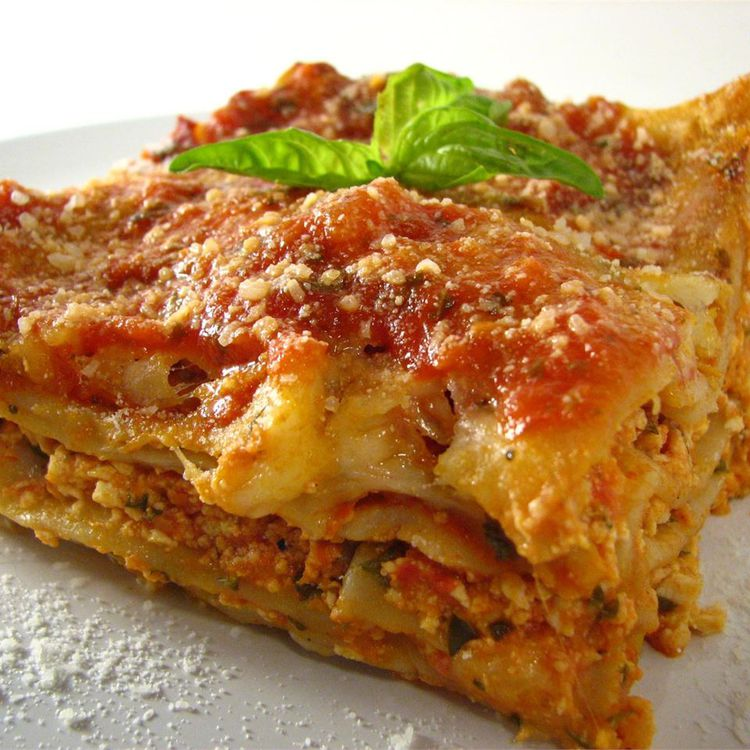

Home
Tofu Lasagna

🧀 Description
This hearty vegetarian lasagna layers crumbled firm tofu blended with eggs, mozzarella, and savory spices between lasagna noodles, then bakes until bubbly and golden—a lighter twist on a classic favorite that still delivers on comfort and flavor. Perfect for tofu skeptics and fans alike.
Ingredients
- ½ (12oz) package uncooked lasagna noodles
- 1 (12oz) package firm tofu, crumbled
- 2 eggs
- ¼tsp salt
- ¼tsp black pepper
- ¼tsp ground nutmeg
- 2Tbsp milk
- 1cup spaghetti sauce
- 1Tbsp dried parsley
- 2cups shredded mozzarella cheese, divided
- ½cup grated Parmesan cheese
Steps
- Preheat oven to 350°F (175°C).
- Bring a large pot of lightly salted water to a boil. Cook the lasagna noodles for 8-10 minutes until al dente, then drain.
- In a medium bowl, combine crumbled tofu, eggs, salt, pepper, nutmeg, milk, spaghetti sauce, parsley, and 1 cup of mozzarella cheese. Spread a layer of this mixture on the bottom of a 9x13in baking dish.
- Layer lasagna noodles over the mixture, then repeat with tofu mixture, ending with sauce.
- Sprinkle the remaining mozzarella and all of the Parmesan cheese over the top.
- Bake in the preheated oven for 25-35 minutes, until heated through and cheese is melted and slightly golden.